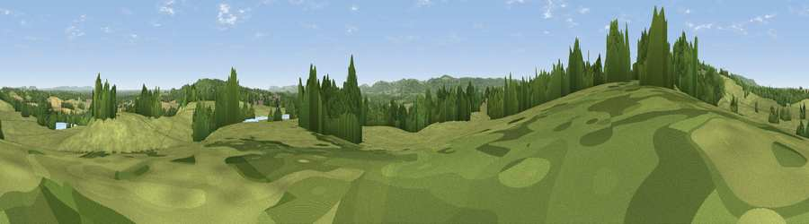

Viewpoint near Tillington
#33654 in England · top 48% of its area beats it · near TillingtonWhere it is
The exact computed spot (SU 96574 22314). Click the marker for map links.
The view, rendered

A 360° render of this exact spot computed from the terrain model, tree cover and land cover — summer colours, afternoon light, calibrated against photographs of famous viewpoints. Real trees, hedges and buildings will differ in detail.
The panorama
Grey silhouette: terrain skyline in each direction (720 bearings, Earth curvature and refraction included). Dashed green: skyline with trees (+15 m) and buildings (+8 m) as obstacles. Blue strip: how far the ground is visible on each bearing.
Where the view opens
Wedge length = distance to the farthest visible ground on that bearing (vegetation-aware). Rings at 10, 25 and 50 km.
What fills the view
56% grassland · 27% woodland · 14% cropland ·
Angular shares of the visible panorama (visual magnitude), not map area. Landscape diversity 0.45 (0–1 Shannon).
Key numbers
More beautiful places nearby
The staircase of upgrades: each row has a higher view potential than everything closer. Driving times are estimates from straight-line distance, calibrated against real road routing — check an actual route before setting out.
| Place | Direction | Drive | Score |
|---|---|---|---|
| Viewpoint near Tillington | NW · 1 km | ~4 min | 55.8 |
| Viewpoint near Stopham | E · 6 km | ~12 min | 65.4 |
| Barlavington Down | S · 7 km | ~14 min | 77.3 |
| Bignor Hill | S · 9 km | ~18 min | 84.4 |
| Linch Down | WSW · 13 km | ~23 min | 85.2 |
| Beacon Hill | WSW · 16 km | ~29 min | 85.8 |
| Chanctonbury Ring | ESE · 20 km | ~34 min | 87.0 |
| Firle Beacon | ESE · 54 km | ~76 min | 88.9 |
50.99213, -0.62532 · source: osm viewpoint · position refined by local search. Computed location — check access rights before visiting.